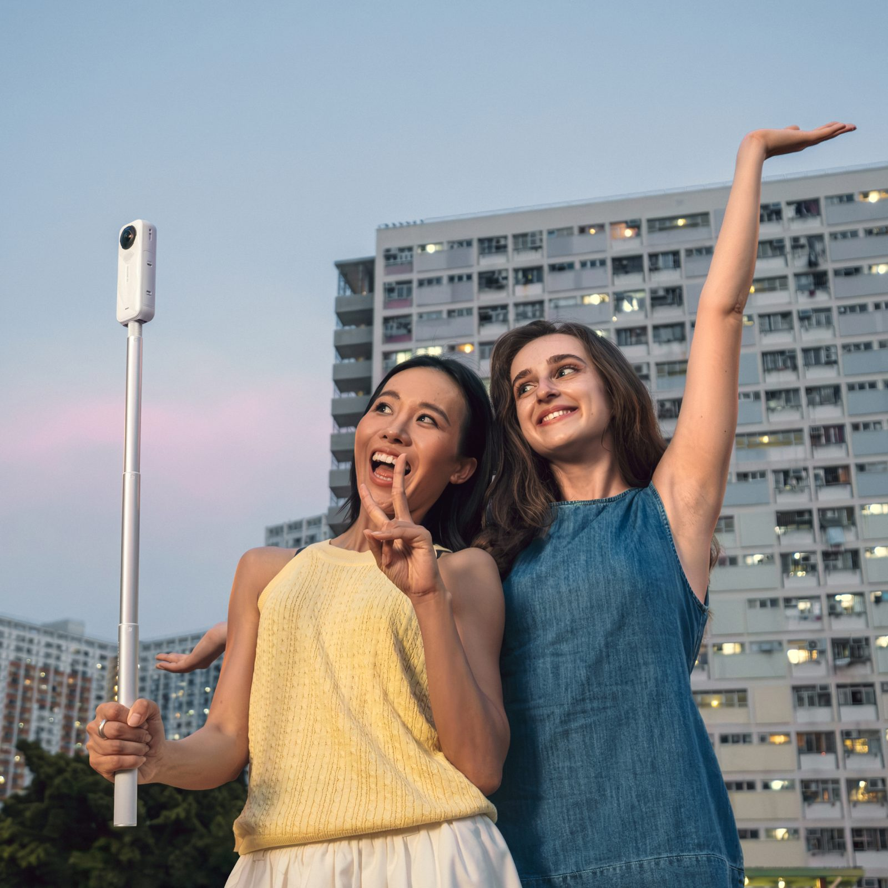
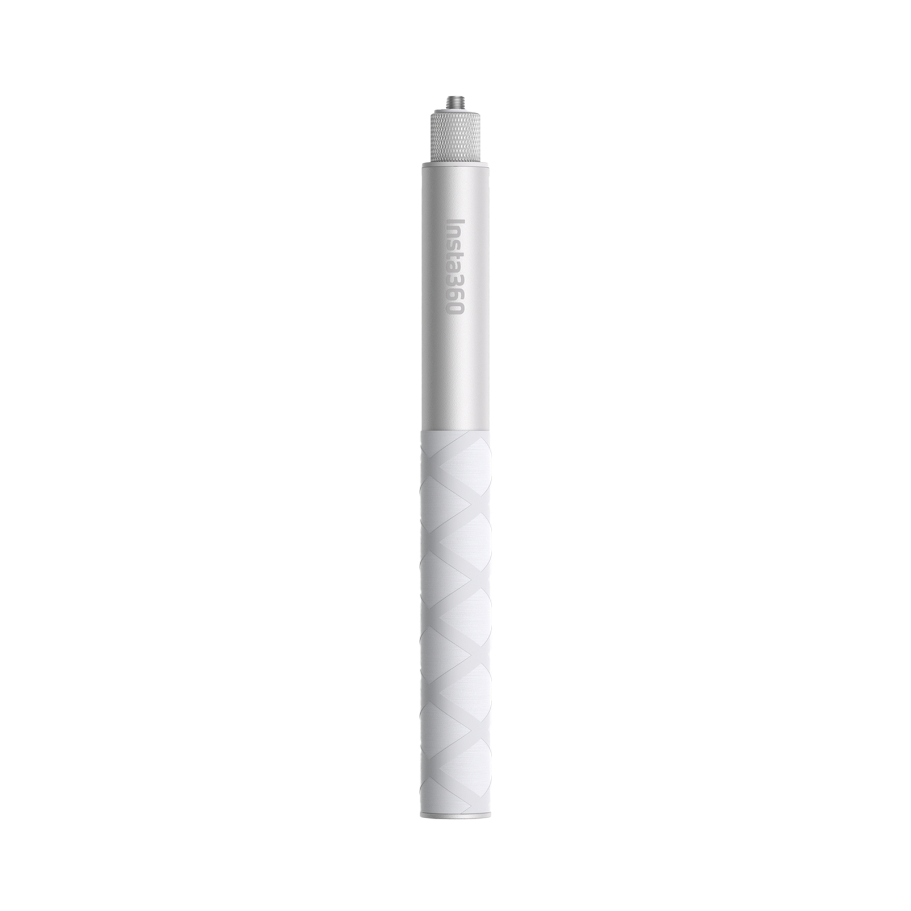
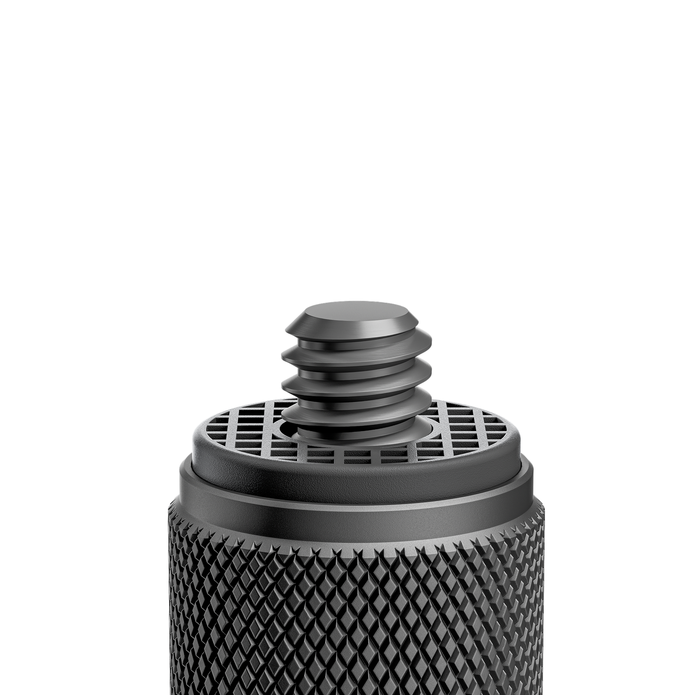
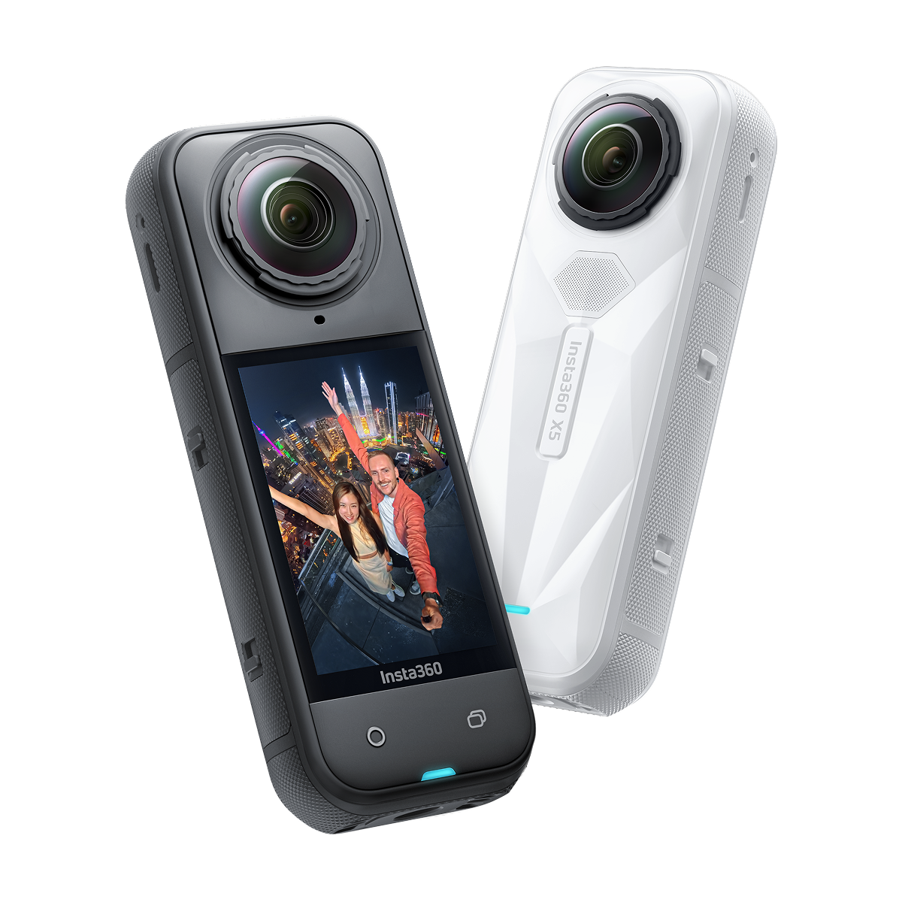
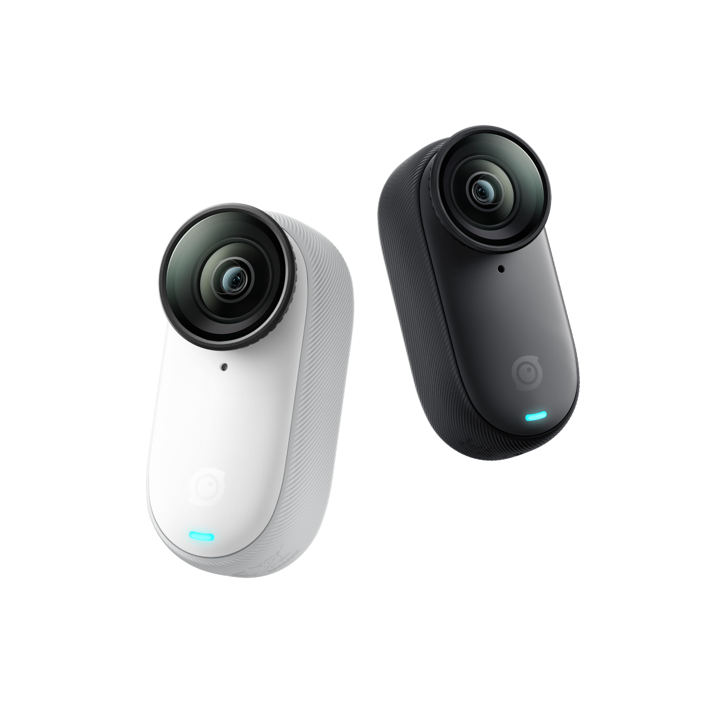

参数规格 · 适配机型 · 搭配不同相机的详细使用教程
官方数据整理
| 对比项 | 114cm 隐形自拍杆 | 85cm 便携隐形自拍杆 | 高强度隐形自拍杆 |
|---|---|---|---|
| 官方售价 | ¥129 | ¥149 | ¥299 |
| 材质 | 铝合金 | 铝合金 | 高强度碳纤维 + 独家专利结构 |
| 收纳长度 | 233 mm（23.3 cm） | 194 mm（19.4 cm） | 280 mm（28 cm） |
| 展开长度 | 1141 mm（114 cm） | 850 mm（85 cm） | 1000 mm（100 cm / 1 m） |
| 重量 | 118 ~ 124 g | 119 g | 124.3 g |
| 强度等级 | ★★★★☆ | ★★★★☆ | ★★★★★（强度提升50%） |
| 便携等级 | ★★★★☆ | ★★★★★ | ★★☆☆☆ |
| 握把 | 可选配标准省力握把 | 内含可拆卸标准省力握把 | — |
| 工艺特色 | 弹簧阻尼片，经久耐用 | 全新轻量化设计 | CNC 一体成型工艺；内置防沙过滤网；底部接口升级 |
| 适用场景 | 日常拍摄、旅行、潜水等 | 日常拍摄、Vlog、旅行（最便携） | 摩托车、滑雪、极限运动等高强度场景 |
| 水下使用 | 海水（√）淡水（√） | 海水（√）淡水（√） | 海水（√）淡水（√） |


| 参数项 | 规格 |
|---|---|
| 产品名称 | 114cm 隐形自拍杆 / 114cm Invisible Selfie Stick |
| 官方售价 | ¥129 |
| 可选颜色 | 经典黑、经典白（皓月白）、金色（Gold Edition） |
| 材质 | 铝合金 |
| 收纳长度 | 233 mm（23.3 cm） |
| 展开长度 | 1141 mm（114 cm） |
| 产品重量 | 118 ~ 124 g |
| 顶部接口 | 1/4" 标准螺口 |
| 包装清单 | 114cm 隐形自拍杆 × 1 |
| 可选配件 | 标准省力握把（需单独购买） |
| 参数项 | 规格 |
|---|---|
| 产品名称 | 85cm 便携隐形自拍杆 / 85cm Invisible Selfie Stick |
| 官方售价 | ¥149 |
| 材质 | 铝合金 |
| 收纳长度 | 194 mm（19.4 cm） |
| 展开长度 | 850 mm（85 cm） |
| 产品重量 | 119 g |
| 顶部接口 | 1/4" 标准螺口 |
| 包装清单 | 85cm 便携隐形自拍杆 × 1（内含可拆卸标准省力握把） |
| 参数项 | 规格 |
|---|---|
| 产品名称 | 高强度隐形自拍杆 / Action Invisible Selfie Stick |
| 官方售价 | ¥299 |
| 材质 | 高强度碳纤维 + 独家专利结构 |
| 收纳长度 | 280 mm（28 cm） |
| 展开长度 | 1000 mm（100 cm / 1 m） |
| 产品重量 | 124.3 g |
| 顶部接口 | 1/4" 标准螺口（CNC 一体成型工艺） |
| 强度对比 | 相较于标准款 114cm 隐形自拍杆，强度提升 50% |
| 特殊设计 | 底部结构升级（适合外接摩托车尾杆等运动配件）；内置防沙过滤网 |
| 包装清单 | 高强度隐形自拍杆 × 1 |
以下机型均可搭配三款隐形自拍杆使用。红色标注表示需要额外购买转接配件。
| 相机系列 | 具体机型 | 转接说明 |
|---|---|---|
| 全景相机 X 系列 | X6、X5、X4、X3、ONE X2、ONE X | 直接安装 |
| 全景相机 ONE RS 系列 | ONE RS 一英寸全景版本、ONE RS（双镜头/4K） |
直接安装 ONE RS 一英寸全景版建议只延长2节（约70cm） |
| 全景相机 ONE R | ONE R | 直接安装 |
| 运动相机 Ace 系列 | Ace Pro 2、Ace Pro、Ace |
需转接 需单独购买「磁吸快拆配件」或「1/4" 转三爪接头」 |
| 拇指相机 GO 系列 | GO 3S、GO 3、GO 2 | 直接安装 |
| 拇指相机 GO Ultra | GO Ultra |
需转接 需单独购买「GO Ultra 磁吸快拆配件」 |
| 其他 | X4 Air | 直接安装 |

这是隐形自拍杆最经典的用法。搭配影石全景相机，自拍杆可在 360° 画面中完全隐形，轻松实现无人机般的第三人称跟拍效果。
Ace 系列为平面运动相机，无法像全景相机那样在拍摄时直接隐形自拍杆，但可以通过后期处理实现自拍杆去除效果。
GO 系列为拇指相机，体积小巧，搭配隐形自拍杆非常适合随身记录。

GO Ultra 连接隐形自拍杆时，需要额外的转接配件。
ONE RS 一英寸全景版相机体积和重量较大，使用长自拍杆时需要特别注意稳定性。
| 相机 + 镜头组合 | 是否支持隐形 | 说明 |
|---|---|---|
| 全景相机 + 全景镜头 | ✅ 完全隐形 | 拍摄时自动消除，无需后期 |
| Ace 系列（平面镜头） | ⚠️ 后期去除 | 需通过 Insta360 App「AI 创意库」→「自拍杆去除」处理 |
| GO 系列 / 广角镜头 | ❌ 暂不支持 | 可通过调整角度避免自拍杆入镜 |
| 超长自拍杆（3m 等） | ❌ 不能完全隐形 | 杆体过长，超出算法处理范围 |
| 相机 + 潜水壳组合 | 自拍杆隐形 | 潜水壳隐形 |
|---|---|---|
| X5 / X4 / X4 Air / X3 + 全隐形潜水壳 | ✅ 支持 | ✅ 支持 |
| X4 Air / X2 / ONE X + 潜水壳 | ✅ 支持 | ❌ 底部无法隐形 |
| 自拍杆类型 | 海水 | 淡水 | 注意事项 |
|---|---|---|---|
| 114cm 隐形自拍杆 | ✅ 支持 | ✅ 支持 | 使用后展开所有管节，清水冲洗并晾干 |
| 85cm 便携隐形自拍杆 | ✅ 支持 | ✅ 支持 | 使用后展开所有管节，清水冲洗并晾干 |
| 高强度隐形自拍杆 | ✅ 支持 | ✅ 支持 | 内置防沙过滤网；使用后需从底部甩出水分并晾干 |
| 超长自拍杆（普通版/升级版） | ❌ 不支持 | ❌ 不支持 | — |
| 子弹时间自拍杆 2.0 | ❌ 不支持 | ✅ 支持 | 水下使用后需甩动手柄，通过底部排水孔排水 |
序列号是设备的唯一标识，常用于产品保修申请、官方技术支持对接等场景。
可能原因：
不能。Ace 系列为平面运动相机，没有全景拼接算法。只能通过 Insta360 App 的「AI 创意库」→「自拍杆去除」进行后期处理。
不能。GO 系列使用广角镜头，目前暂不支持自拍杆隐形。建议调整拍摄角度避免自拍杆入镜，或改用全景相机拍摄。
| 需求 | 推荐型号 |
|---|---|
| 日常 Vlog、旅行、最便携 | 85cm 便携隐形自拍杆（¥149） |
| 最长延伸、日常拍摄、性价比最高 | 114cm 隐形自拍杆（¥129） |
| 摩托车、滑雪、极限运动 | 高强度隐形自拍杆（¥299） |
可以。114cm、85cm 和高强度隐形自拍杆均支持海水和淡水中使用。但使用后必须展开管节、清水冲洗并完全晾干，防止腐蚀和管节卡死。
高强度隐形自拍杆底部内置防沙过滤网，可在沙滩、沙漠等环境中使用时阻挡沙粒进入杆体内部，避免管节被沙子卡住，延长使用寿命。
不能。超长自拍杆（普通版/升级版 3m）在全景画面中不能完全隐形。如需完全隐形，请使用 114cm 或 85cm 隐形自拍杆。